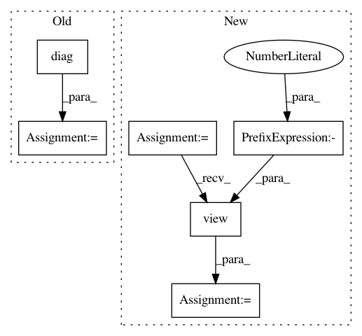

2ace85bfe963b8399cc8ec0cdd859a8e0ee31dbd,test/lazy/_lazy_tensor_test_case.py,LazyTensorTestCase,test_diag,#LazyTensorTestCase#,233
Before Change
evaluated = self.evaluate_lazy_tensor(lazy_tensor)
res = lazy_tensor.diag()
actual = evaluated.diag()
self.assertEqual(res.size(), lazy_tensor.size()[:-1])
self.assertLess(((res - actual).abs() / actual.abs().clamp(1, 1e5)).max().item(), 3e-1)
def test_inv_quad_log_det(self):
After Change
flattened_evaluated = evaluated.view(-1, *lazy_tensor.matrix_shape)
res = lazy_tensor.diag()
actual = torch.stack([flattened_evaluated[i].diag() for i in range(flattened_evaluated.size(0))])
actual = actual.view(*lazy_tensor.batch_shape, -1)
self.assertEqual(res.size(), lazy_tensor.size()[:-1])
self.assertLess(((res - actual).abs() / actual.abs().clamp(1, 1e5)).max().item(), 3e-1)
def test_inv_quad_log_det(self):
In pattern: SUPERPATTERN
Frequency: 3
Non-data size: 6
Instances
Project Name: cornellius-gp/gpytorch
Commit Name: 2ace85bfe963b8399cc8ec0cdd859a8e0ee31dbd
Time: 2018-12-11
Author: gpleiss@gmail.com
File Name: test/lazy/_lazy_tensor_test_case.py
Class Name: LazyTensorTestCase
Method Name: test_diag
Project Name: cornellius-gp/gpytorch
Commit Name: 979b8c9efa551e8c948a4aca145367a2d87ac8d6
Time: 2019-02-26
Author: balandat@fb.com
File Name: test/distributions/test_multitask_multivariate_normal.py
Class Name: TestMultiTaskMultivariateNormal
Method Name: test_multivariate_normal_correlated_sampels
Project Name: cornellius-gp/gpytorch
Commit Name: 979b8c9efa551e8c948a4aca145367a2d87ac8d6
Time: 2019-02-26
Author: balandat@fb.com
File Name: test/distributions/test_multitask_multivariate_normal.py
Class Name: TestMultiTaskMultivariateNormal
Method Name: test_multivariate_normal_batch_correlated_sampels